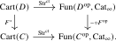
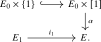

Let \(p\colon E \to C\) be a cocartesian fibration. For every object \(x\) of \(C\), we may consider the fiber \(E_x\) of \(p\) over \(x\). For a morphism \(f\colon x \to y\) in \(C\), there is a cocartesian transport functor \(f_!\colon E_x \to E_y\). Furthermore, given another morphism \(g\colon y \to z\), there is a natural isomorphism \[ g_! \circ f_! \cong (g \circ f)_! \colon E_x \to E_z. \] Morally speaking, this construction should assemble into a functor \[ \Str ^{\cc }(p)\colon C \to \Cat _{\infty }, \quad x \mapsto E_x, \quad f \mapsto f_!. \] This is precisely the content of the straightening/unstraightening correspondence:
Theorem 23.2.1 (Straightening/Unstraightening, Lurie (2009), Hebestreit et al. (2021)). Let \(C\) be a small \(\infty \)-category. Then there exist equivalences of \(\infty \)-categories \[ \Str ^{\cc }\colon \Cocart (C) \iso \Fun (C,\Cat _{\infty }) \] and \[ \Str ^{\ct }\colon \Cart (C) \iso \Fun (C\catop ,\Cat _{\infty }). \] Furthermore, these equivalences are natural1 in \(C\), in the sense that for every functor \(F\colon C \to D\) the following two squares commute:

Finally, the composites \begin {align*} \Cat _{\infty } \simeq \Cocart (*) &\xrightarrow {\Str ^{\cc }} \Fun (*,\Cat _{\infty }) \simeq \Cat _{\infty } \\ \Cat _{\infty } \simeq \Cart (*) &\xrightarrow {\Str ^{\ct }} \Fun (*,\Cat _{\infty }) \simeq \Cat _{\infty } \end {align*}
are (isomorphic to) the identity functors.
This is one of the most fundamental and most important results in the theory of \(\infty \)-categories. The theorem was first proved in the model of quasicategories by Jacob Lurie; the proof has since been substantially simplified by [Hebestreit et al. (2021)]. Since this result is so fundamental to the theory, it may also be taken as an axiom, which is what we will do in this book.
Given a cocartesian fibration \(p\colon E \to C\), we refer to the functor \(\Str ^{\cc }(p)\colon C \to \Cat _{\infty }\) as its (cocartesian) straightening, and similarly for \(\Str ^{\ct }(p)\). The inverses of \(\Str ^{\cc }\) and \(\Str ^{\ct }\) are denoted by \[ \Un ^{\cc }\colon \Fun (C,\Cat _{\infty }) \iso \Cocart (C), \qquadtext { and } \Un ^{\ct }\colon \Fun (C\catop ,\Cat _{\infty }) \iso \Cart (C). \] Given a functor \(F\colon C \to \Cat _{\infty }\), we refer to the cocartesian fibration \(\Un ^{\cc }(F) \to C\) as its cocartesian unstraightening, and to the cartesian fibration \(\Un ^{\ct }(F)\) as the cartesian unstraightening.
Lemma 23.2.2. Let \(S\) be a small \(\infty \)-category, and let \(\alpha \colon F\Rightarrow G\) be a natural transformation between functors \(F,G\colon S\to \Cat _{\infty }\). If every functor \(\alpha _s\colon F(s)\to G(s)\) is a left fibration, then the induced functor \[ \Un ^{\cc }(\alpha )\colon \Un ^{\cc }(F)\longrightarrow \Un ^{\cc }(G) \] is a left fibration. Its fiber over \((s,g)\in \Un ^{\cc }(G)\) is the fiber of \(\alpha _s\) over \(g\).
Proof. See Reference ? of [Cisinski et al. (2026)]. □
Lemma 23.2.3. Let \(p\colon E\to C\) be a cocartesian fibration and let \(I\) be a small \(\infty \)-category. Then \[ p_*\colon \Fun (I,E)\longrightarrow \Fun (I,C) \] is a cocartesian fibration. A natural transformation in \(\Fun (I,E)\) is \(p_*\)-cocartesian if and only if all its components are \(p\)-cocartesian.
Proof. See Reference ? of [Cisinski et al. (2026)]. □
We will use the following compatibility of unstraightening with functor categories. Here \(\const \colon C\to \Fun (I,C)\) denotes the constant-diagram functor.
Proposition 23.2.4. Let \(p\colon E\to C\) be a cocartesian fibration classified by a functor \(F\colon C\to \Cat _{\infty }\), and let \(I\) be a small \(\infty \)-category. The composite \[ C\xrightarrow {F}\Cat _{\infty }\xrightarrow {\Fun (I,-)}\Cat _{\infty } \] is classified by the cocartesian fibration \[ C\times _{\Fun (I,C)}\Fun (I,E)\longrightarrow C, \] where the map \(\Fun (I,E)\to \Fun (I,C)\) is induced by \(p\) and the map from \(C\) sends an object to its constant \(I\)-diagram.
Proof. See Reference ? of [Cisinski et al. (2026)]. □
Example 23.2.5. When \(C = [0]\), the last statement of the theorem implies that for a cocartesian fibration \(p\colon E \to C\) the \(\infty \)-categories \(\Str ^{\cc }(p)(x)\) for \(x \in C\) are precisely the fibers of \(p\).
Example 23.2.6. An illustrative example is (un)straightening over the walking morphism \(C = [1]\).
Consider first a cocartesian fibration \(p\colon E \to [1]\), with \(E\) small, and let \(E_0\) and \(E_1\) denote its fibers over \(0\) and \(1\), respectively. Cocartesian transport along the canonical morphism in \([1]\) results in a functor \(F\colon E_0 \to E_1\), which corresponds to a morphism in \(\Cat _{\infty }\), i.e. a functor \([1] \to \Cat _{\infty }\). This is \(\Str ^{\cc }(p)\).
Conversely, consider a functor \(F\colon E_0 \to E_1\) between small \(\infty \)-categories. Regarding this as a morphism in \(\Cat _{\infty }\), its unstraightening takes the form of a cocartesian fibration \(E \to [1]\). Since the fibers over \(0\) and \(1\) are \(E_0\) and \(E_1\), there are inclusions \(i_0\colon E_0 \hookrightarrow E\) and \(i_1\colon E_1 \hookrightarrow E\). Moreover, by choosing coherent choices of cocartesian lifts, there is a natural transformation \(\alpha \colon i_0 \Rightarrow i_1 \circ F\) of functors \(E_0 \to E\). All in all, we have constructed a commutative square in \(\Cat _{\infty }\) as follows:

It can be shown that this square is a pushout square in \(\Cat _{\infty }\), see for example [Lurie (2009), Section 3.2.2].
Let us now state some immediate consequences of the theorem.
Corollary 23.2.7. The straightening equivalences \(\Str ^{\cc }\) and \(\Str ^{\ct }\) restrict to equivalences \[ \Str ^{\cc } \colon \LFib (C) \iso \Fun (C,\An ) \qquadtext { and } \Str ^{\ct } \colon \RFib (C) \iso \Fun (C\catop ,\An ). \]
Proof. Given a cocartesian fibration \(p\colon E \to C\), the individual values of \(\Str ^{\cc }(p)\) are precisely the fibers of \(p\). In particular, \(\Str ^{\cc }(p)\) lands in the subcategory \(\An \subseteq \Cat _{\infty }\) if and only if all fibers are animae. By Proposition 23.1.16, this is equivalent to \(p\) being a left fibration, proving the first equivalence. The dual discussion provides the right equivalence. □
Corollary 23.2.8. Let \(X\) be an anima. Then there is an equivalence of \(\infty \)-categories \[ \Str \colon \An _{/X} \iso \Fun (X,\An ). \]
Proof. If \(C\) is an anima, then every functor \(E \to C\) is both a cocartesian and a cartesian fibration. Moreover, it is a left/right fibration if and only if also \(E\) is an anima. The claim now becomes an instance of Corollary 23.2.7. □
Notation 23.2.9. We will denote the inverses to the straightening functors \(\Str ^{\cc }\) and \(\Str ^{\ct }\) by \[ \Un ^{\cc }\colon \Fun (C,\Cat _{\infty }) \iso \Cocart (C) \qquadtext { and } \Un ^{\ct }\colon \Fun (C\catop ,\Cat _{\infty }) \iso \Cart (C), \] and refer to these as (cocartesian/cartesian) unstraightening. Given a functor \(F\colon C \to \Cat _{\infty }\), we may describe its unstraightening \(\Un ^{\cc }(F)\) informally as follows:
- An object in \(\Un ^{\cc }(F)\) is a pair \((x,a)\), where \(x\) is an object of \(C\) and \(a\) is an object of \(F(x)\);
- A morphism in \(\Un ^{\cc }(F)\) from \((x,a)\) to \((y,b)\) is a pair \((f,\phi )\), where \(f\colon x \to y\) is a morphism in \(C\) and \(\phi \colon f_!(a) \to b\) is a morphism in \(F(y)\). Here we write \(f_!\) for the functor \(F(f)\colon F(x) \to F(y)\) induced by \(f\) using the functoriality of \(F\).
- Composition of \((f,\phi )\colon (x,a) \to (y,b)\) and \((g,\psi )\colon (y,b) \to (z,c)\) is defined as \((g \circ f, \psi \circ g_!(\phi ))\).
The functor \(\Un ^{\cc }(F) \to C\) is given by \((x,a) \mapsto x\) and \((f,\phi ) \mapsto f\). A dual description holds for \(\Un ^{\ct }(F)\).
Proposition 23.2.10 (Coproducts and extensivity in cartesian unstraightenings). Let \(q\colon E \to B\) be a cartesian fibration, where \(B\) admits finite coproducts. If the straightening \[ \Str ^{\ct }(q)\colon B\catop \to \Cat _{\infty } \] preserves finite products, then \(E\) admits finite coproducts and \(q\) preserves them. More precisely, if \(X_a \in E_{b_a}\) and \(X \in E_{\coprod _a b_a}\) corresponds to \((X_a)_a\) under the equivalence \[ E_{\coprod _a b_a} \simeq \prod _a E_{b_a}, \] then the \(q\)-cartesian lifts \(X_a \to X\) of the coproduct inclusions exhibit \(X\) as the coproduct \(\coprod _a X_a\) in \(E\).
If, in addition, \(B\) is extensive, then \(E\) is extensive.
Proof. The first assertion is dual to Reference ? of [Cisinski et al. (2026)].
For the final assertion, write \(F := \Str ^{\ct }(q)\) and let \(Y := \coprod _a Y_a\), where \(Y_a \in E_{b_a}\). Since \(F\) preserves finite products, the coproduct of a finite family of \(q\)-cartesian morphisms is again \(q\)-cartesian: under the product equivalence between the relevant fibers, it corresponds to a tuple of isomorphisms. Hence the coproduct functor \[ \prod _a E_{/Y_a} \longrightarrow E_{/Y} \] is a cartesian functor over the extensivity equivalence \[ \prod _a B_{/b_a} \iso B_{/\coprod _a b_a}. \] By the dual of Reference ? of [Cisinski et al. (2026)], the induced functor on fibers over a tuple \((f_a\colon c_a \to b_a)_a\) is \[ \prod _a F(c_a)_{/f_a^*Y_a} \longrightarrow F\Bigl (\coprod _a c_a\Bigr )_{/(\coprod _a f_a)^*Y}. \] This is an equivalence because \(F\) preserves finite products. Hence the coproduct functor on slices is an equivalence, so \(E\) is extensive. □
Remark 23.2.11. In Theorem 23.2.1 we only formulated a ‘morphismwise’ version of functoriality of the straightening equivalences. Let us remark on how to formulate a fully functorial version.
For this, we will need to assume the existence of an even bigger universe \(\widehat {\Cat }_{\infty }\) of large \(\infty \)-categories, and assume that \(\Cat _{\infty }\) is an object of \(\widehat {\Cat }_{\infty }\), cf. Remark 1.8.1. Applying cartesian straightening to the cartesian fibration \(t\colon \Ar (\Cat _{\infty }) \to \Cat _{\infty }\) results in a contravariant functor \[ \Cat _{\infty }\catop \to \widehat {\Cat }_{\infty }, \quad C \mapsto (\Cat _{\infty })_{/C}, \quad (F\colon C \to D) \mapsto (F^*\colon (\Cat _{\infty })_{/D} \to (\Cat _{\infty })_{/C}). \] Since cocartesian fibrations are closed under pullback, this restricts to a functor \[ \Cocart (-)\colon \Cat _{\infty }\catop \to \widehat {\Cat }_{\infty }. \] Similarly, the assignment \(C \mapsto \Fun (C,\Cat _{\infty })\) defines a functor \[ \Fun (-,\Cat _{\infty }) \colon \Cat _{\infty }\catop \to \widehat {\Cat }_{\infty }, \] where functoriality is given by precomposition. The fully coherent version of the straightening equivalence would now ask for a natural equivalence \[ \Str ^{\cc }\colon \Cocart (-) \iso \Fun (-,\Cat _{\infty }) \] of functors \(\Cat _{\infty }\catop \to \widehat {\Cat }_{\infty }\).
Remark 23.2.12. Recall that if two functors \(F\colon C \to D\) and \(G\colon D \to E\) admit right adjoints \(F^R\) and \(G^R\), then \(GF\) admits a right adjoint \(F^RG^R\). Using straightening/unstraightening, we can define a highly coherent version of this functoriality of passing to right adjoints. Consider the wide subcategories \[ \CatL _{\infty } \subseteq \Cat _{\infty } \qquadtext { and } \CatR _{\infty } \subseteq \Cat _{\infty } \] denote the wide subcategories spanned by the left adjoints and right adjoints, respectively. We claim that passing to right adjoints defines a functor \[ (-)^{\R } \colon (\CatL _{\infty })\catop \to \CatR _{\infty }. \] To this end, choose a bigger universe \(\widehat {\Cat }_{\infty }\) containing \(\Cat _{\infty }\) as an object. The inclusion \(\CatL _{\infty } \hookrightarrow \widehat {\Cat }_{\infty }\) can then be straightened to a cocartesian fibration \(E \to \CatL _{\infty }\). Given a morphism \(F\colon C \to D\) in \(\CatL _{\infty }\), the induced cocartesian transport map \(E_C \to E_D\) on fibers is precisely the functor \(F\) itself. Since by assumption \(F\) admits a right adjoint, it follows from Lemma 23.1.20 that this cocartesian fibration is also a cartesian fibration, hence straightens to a functor \((-)^{\textup {R}} \colon (\CatL _{\infty })\catop \to \widehat {\Cat }_{\infty }\). By checking on objects and morphisms, this factors through \(\CatR _{\infty }\).
Notes
1See Remark 23.2.11 for a more refined version of the naturality.
Generated from the authoritative LaTeX source.